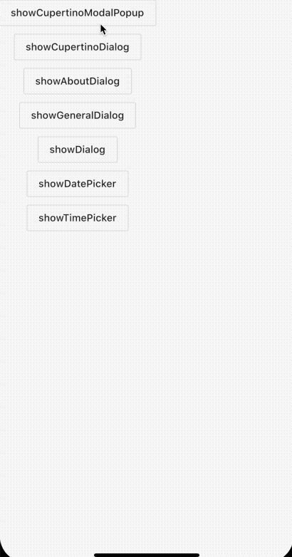
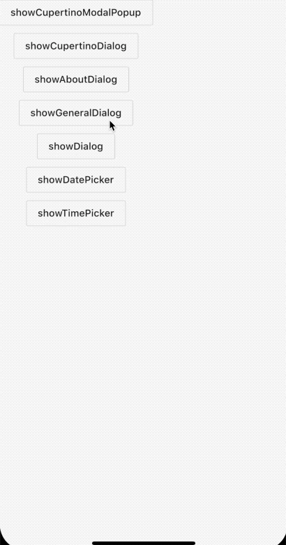
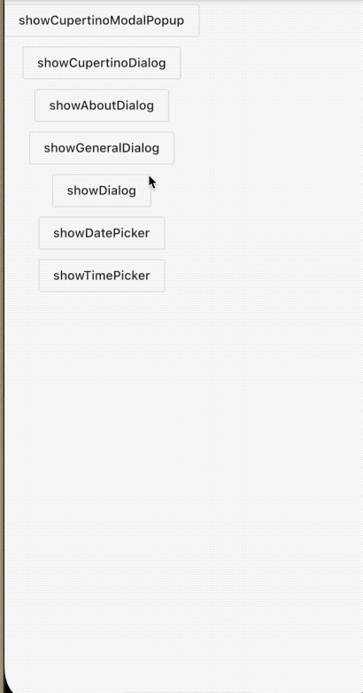
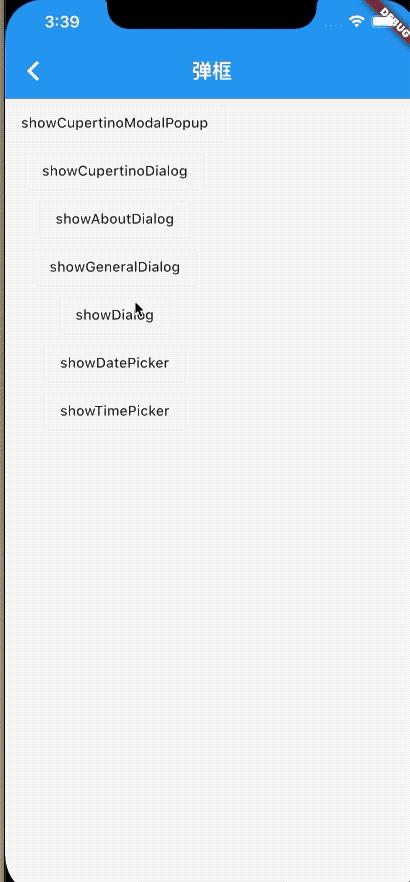
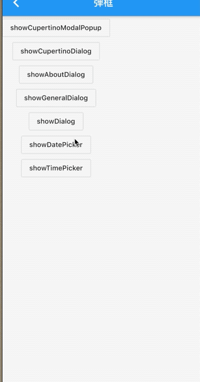
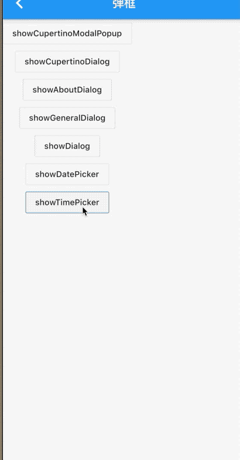

3.9 弹窗
组件库中提供了多种弹窗适用于选择时间、定时、用户选择、表单提交等。。。
3.9.1 showCupertinoDialog
showCupertinoModalPopup是一个iOS-style风格的弹窗，从底部弹出，附带了一个唯一动画和渐变消失的动画，按钮也是iOS-style风格，点击遮罩返回。下面看下代码：
例子：
void _showActionSheet() {
showCupertinoModalPopup(
context: context,
builder: (ctx) {
return CupertinoActionSheet(
title: Text('温馨提示'),
message: Text('我是支付选项，任意选择一个进行支付哦'),
actions: <Widget>[
CupertinoActionSheetAction(onPressed: _pop, child: Text('微信')),
CupertinoActionSheetAction(onPressed: _pop, child: Text('支付宝')),
CupertinoActionSheetAction(
onPressed: _pop,
child: Text('取消'),
isDestructiveAction: true,
),
],
);
});
}
效果：

3.9.2 showCupertinoDialog
showCupertinoDialog是对showGeneralDialog的一个封装，只是barrierDismissible、barrierColor、transitionDuration进行了iOS-style格调的设置。
源码：
Future<T> showCupertinoDialog<T>({
@required BuildContext context,
@required WidgetBuilder builder,
bool useRootNavigator = true,
RouteSettings routeSettings,
}) {
assert(builder != null);
assert(useRootNavigator != null);
return showGeneralDialog(
context: context,
barrierDismissible: false,
barrierColor: CupertinoDynamicColor.resolve(_kModalBarrierColor, context),
// This transition duration was eyeballed comparing with iOS
transitionDuration: const Duration(milliseconds: 250),
pageBuilder: (BuildContext context, Animation<double> animation, Animation<double> secondaryAnimation) {
return builder(context);
},
transitionBuilder: _buildCupertinoDialogTransitions,
useRootNavigator: useRootNavigator,
routeSettings: routeSettings,
);
}
和showCupertinoModalPopup区别是一个从底部，一个全屏。
下面看下例子；
showCupertinoDialog(
context: context,
builder: (ctx) {
return CupertinoActionSheet(
title: Text('温馨提示'),
message: Text('我是showCupertinoDialog'),
actions: <Widget>[
CupertinoActionSheetAction(onPressed: _pop, child: Text('微信')),
CupertinoActionSheetAction(onPressed: _pop, child: Text('支付宝')),
CupertinoActionSheetAction(
onPressed: _pop,
child: Text('取消'),
isDestructiveAction: true,
),
],
);
});
效果：

3.9.3 showAboutDialog
showAboutDialog是flutter官方封装的一个关于我的组件，包含了版本号、icon、以及Licenses内容。
例子：
showAboutDialog(
context: context,
applicationVersion: '1.0.0',
applicationIcon: Icon(Icons.scatter_plot),
applicationName: 'Jack ma',
);

3.9.4 showGeneralDialog
showGeneralDialog是一个比较基础的弹窗， 可以用这个封装成任意其他的弹窗。
例子：
showGeneralDialog(
context: context,
barrierDismissible: true,
barrierLabel: 'cancel',
transitionDuration: Duration(milliseconds: 1000),
pageBuilder: (BuildContext context, Animation<double> animation,
Animation<double> secondaryAnimation) {
return Material(
child: Scaffold(
body: Center(
child: CupertinoActionSheet(
title: Text('温馨提示'),
message: Text('我是showGeneralDialog，任意选择一个进行支付哦'),
actions: <Widget>[
CupertinoActionSheetAction(
onPressed: _pop, child: Text('微信')),
CupertinoActionSheetAction(
onPressed: _pop, child: Text('支付宝')),
CupertinoActionSheetAction(
onPressed: _pop,
child: Text('取消'),
isDestructiveAction: true,
),
],
),
),
),
);
});
效果：

3.9.4 showDialog
showDialog也是封装的showGeneralDialog,只是固定参数进行了适配。
void _showDialog() {
showDialog(context: context, child: bd());
}
Widget bd() {
return CupertinoActionSheet(
title: Text('温馨提示'),
message: Text('我是支付选项，任意选择一个进行支付哦'),
actions: <Widget>[
CupertinoActionSheetAction(onPressed: _pop, child: Text('微信')),
CupertinoActionSheetAction(onPressed: _pop, child: Text('支付宝')),
CupertinoActionSheetAction(
onPressed: _pop,
child: Text('取消'),
isDestructiveAction: true,
),
],
);
}

3.9.6 showDatePicker
showDatePicker是官方提供的一个日历组件，也是座位弹窗形式展现，参数很简单。
showDatePicker({
@required BuildContext context,
@required DateTime initialDate,
@required DateTime firstDate,
@required DateTime lastDate
...
}
只需要配置当前的上下文和开始结束时间即可。
例子：
showDatePicker(
context: this.context,
initialDate: DateTime.now(), //初始时间
firstDate: DateTime.now(), //开始时间
lastDate: DateTime.now().add(Duration(days: 10)), //最后时间是当前时间加上10天
initialDatePickerMode: DatePickerMode.year, //最开始展示年份
initialEntryMode: DatePickerEntryMode.input, //开始是输入时间还是日历
selectableDayPredicate: (time) {
print(time.toString());
return true;
})
效果：

3.9.7 showTimePicker
showTimePicker是一个选择时间长短的控件,使用起来很简单，只需要传入默认时间即可。
showTimePicker(
context: this.context,
initialTime: TimeOfDay(hour: 1, minute: 10))
效果：
